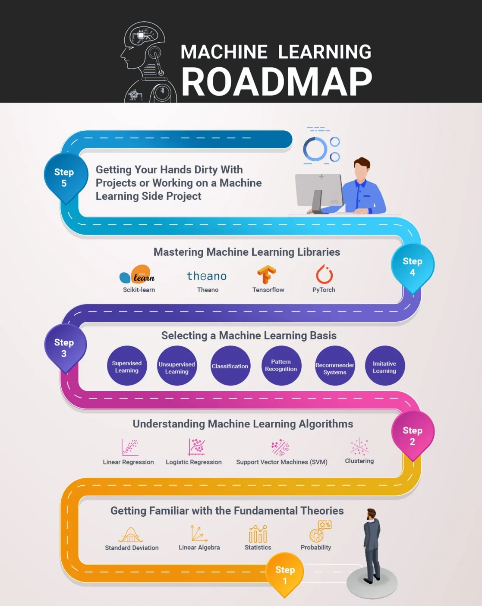

Machine Learning
It’s a way to make computers learn from experience and adjust accordingly for repeating processes and outcomes without having to be programmed in advance with specific instructions like traditional algorithms.
Purpose of machine learning
Machine-learning algorithms use historical data to predict new output values and make decisions based on that information. This type of artificial intelligence has reduced workloads for many industries, including healthcare and finance, by automatically recognizing patterns in their records that might otherwise go unnoticed! With machine learning, programs can become more accurate at predicting outcomes without being explicitly programmed.
Machine learning is great, but what makes it stand out is its capacity to predict outcomes to avoid any negatives in the future.
A few examples of these are market demand forecasts, stock prices, and even survival predictors to see how feasible it is for someone to survive in a given situation.
Pursuing a career in machine learning
Now that you’re more familiar with what machine learning is, let’s talk about its applications and how it can be a great career choice for many people.
The demand for machine learning experts and engineers is at an all-time high. The skillset of these professionals can easily assist companies in achieving their goals while helping them to be more efficient and productive. It also allows them to create data-driven business decisions and build products that can better serve customers’ needs and wants.
According to a study from LinkedIn, the number of machine learning engineers has increased by 9.8x in the last 5 years. They claim that data science and ML are generating more job openings than there are applicants for right now, making it today’s fastest-growing technology for employment.
In fact, Glassdoor enlists Machine Learning Engineer positions as part of the top 50 best jobs in the US for 2022 with a median salary base of $130,489. If you’re eager to learn machine learning and you’re excited about the future of machine learning technologies, this might be the best time to start learning about this field to prepare yourself for its upcoming innovations and developments.
Your machine learning roadmap:
Step 1: Getting familiar with the fundamental theories, concepts & technologies
The best way to understand what machine learning is and how it works is by studying the theories, concepts, methods, and algorithms behind it. These are the basic building blocks of machine learning models you see in a machine-learning system.
It’s a good idea to start with an overview of these elements so you can have a clear understanding of all the mathematical concepts you’ll learn in future courses or articles. For instance, you need to learn linear algebra, statistics, and probability before you can understand how machine learning algorithms work and the problems they solve. Also check out our specially designed data science bootcamp program that can help amplify your machine learning skillset to an extraordinary level.
Once you’ve acquired a working understanding of these fundamental concepts, you can then proceed with diving into machine-learning models that are often used in real life.
Here are some of the basics you can study before you get started with your ML journey:
- Standard Deviation: Standard deviation is a popular metric used in statistics to measure the variability, or dispersion, of a set of data from its mean.
- Linear Algebra: Linear algebra is an area of mathematics concerning vector spaces and linear mappings between such spaces.
- Statistics: Statistics is a field of study concerned with the collection, analysis, interpretation, and presentation of data.
- Probability: In statistics, probability theory is the branch of mathematics concerned with the analysis of random phenomena.
Step 2: Understanding machine learning algorithms
In machine learning, algorithms are the instructions that tell a computer what to do. In some cases, they can be as simple as “if X is true then do Y” or more complex formulations which might have conditionals and iterations.
Many algorithms in machine learning basically work by processing data points, having a particular output for each data point (for example, classifying an email as spam or not), and using mathematical models to predict future outputs.
To help you with this, here’s a brief list of the most commonly used processes and algorithms that are widely taught when learning machine learning:
- Linear Regression: Linear regression is an approach for modeling the relationship between variables. It fits linear models to data in order to make predictions.
- Logistic Regression: Logistic regression is a type of probabilistic classification algorithm that assigns class values to new observations in order to maximize the probability that its classification of the input data was correct.
- Support Vector Machines (SVM): SVM is an approach for solving supervised learning problems with categorical or real-valued inputs and discrete outputs. Support vectors are the training examples that are closest to being on the margin.
- Clustering: Clustering is a technique for finding subgroups in your data. The basic idea behind clustering is to take a bunch of points and find which ones belong together based on their proximity to one another.
Step 3: Selecting a machine learning basis
As you start to familiarize yourself with concepts and theories, now is also the best time to choose which machine-learning practice you want to focus on.
For now, you can start with this broad selection of topics:
- Supervised Learning: Supervised learning is a type of machine learning where the computer is given a set of training data, and the task is to learn how to map these inputs to the desired outputs.
- Unsupervised Learning: Unsupervised learning is a type of machine learning where the computer is given data but is not told what the correct outputs should be. The goal is to find structure in the data and learn from it.
- Classification: Classification is the task of identifying which category an item belongs to based on labeled examples. Examples of such labels are as follows: spam vs not spam, malignant vs benign tumors, and so forth.
- Pattern Recognition: Pattern recognition is the machine learning task of identifying patterns in data. The data consists of input variables (such as pixels) and target variables (such as whether or not a tumor is malignant).
- Recommender Systems: Recommender systems are programs that predict what items a user would like, given an existing set of preferences. This type of system is widely used in the Netflix Prize, in search engines like Google or Bing, on social networks to predict friend recommendations.
- Imitative Learning: Imitative learning is a method of machine learning that involves learning from demonstration. It uses observations of an expert’s behavior to learn how to perform tasks without any instruction on how to solve them.
Step 4: Mastering machine learning libraries
Machine learning libraries are the building blocks of your machine learning application. Libraries are basically collections of functions created to make developing machine-learning applications easier by providing various prepackaged functionalities.
- Scikit-learn: Scikit-Learn is an open-source software library for Machine Learning built-in Python and is capable of running on top of either SciPy or NumPy.
- Theano: Theano is a Python library that allows you to define, optimize, and evaluate mathematical expressions involving multi-dimensional arrays efficiently.
- Tensorflow: TensorFlow™ is an open-source software library for numerical computation using data flow graphs. Nodes in the graph represent mathematical operations, while the graph edges represent the multidimensional data arrays (tensors) communicated between them.
- PyTorch: PyTorch is a Python package that provides two high-level features: Tensor computation (like NumPy) with strong GPU acceleration and deep neural networks built on a tape-based autograd system.
Step 5: Getting your hands dirty with projects or working on a machine learning side project
As you are working on machine learning algorithms, don’t forget to put your skills into practice by solving real-world problems. You can accomplish this in many ways:
- Working with a startup or small company that needs data-driven solutions.
- Building a data science portfolio. If you’re not sure how to get started, just Google “data scientist resume” and look at the example resumes. Or ask for help on Reddit or Analytics Stack Exchange.
- Finding a Machine Learning Challenge: Sites like DataKind have ongoing machine learning projects that require volunteers.
Conclusion:
The machine learning field is vast and there are many things to learn. So, the best way to start your machine-learning journey is by starting with an end goal in mind such as “I want my business data to be smarter” or “I need a recommender system for my website.”
After setting your goals, read articles on the topic to get an idea of what you’re up against. Next, start learning about individual components bit by bit in order to have a good understanding of how everything fits together as a whole. You can enlist in a Data Science Bootcamp & Python for Data Science training to get a better understanding of how all these concepts come together in theory and practice.
Finally, put your skills into practice by working on pre-defined projects or building your own project which you can show off at your next data science interview.
That’s it from us, good luck and have fun!